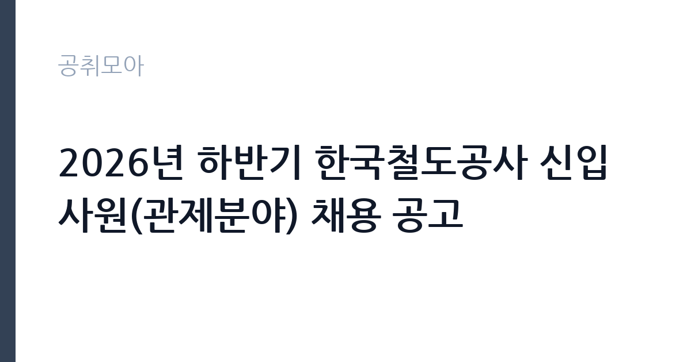

[공공기관] 2026년 하반기 한국철도공사 신입사원(관제분야) 채용 공고
한국철도공사 · 서울 · 마감 2026-10-07 (D-11) · 출처 잡알리오

한눈에 보는 모집 조건
| 기관 | 한국철도공사 |
|---|---|
| 공고명 | 2026년 하반기 한국철도공사 신입사원(관제분야) 채용 공고 |
| 고용형태 | 정규직 |
| 근무지 | 서울 |
| 게시일 | 2026-09-23 |
| 마감일 | 2026-10-07 (D-11) |
지원자격, 이렇게 읽으세요
- 공공기관 채용공시
- 세부 조건은 원문 공고문 확인
필수 자격요건은 철도교통관제자격증명 자격 소지입니다. 이 자격증이 없으시면 지원하실 수 없으므로 가장 먼저 확인하셔야 합니다. 학력과 성별, 연령에는 제한이 없으나 1966년 12월 31일 이전 출생자는 지원하실 수 없습니다. 남성은 군필 또는 면제자에 한하며, 전역일이 최종합격자 발표일인 2026년 12월 7일 이전이고 각 시험일에 참석하실 수 있는 경우에 지원하실 수 있습니다. 철도 현장 업무수행이 가능하셔야 하고 공사 채용 결격사유에 해당하지 않으셔야 하며, 최종합격자 발표일 이후부터 근무가 가능하셔야 합니다. 외국인 지원자는 거주와 재외동포, 영주권 자격에 한합니다. 세부 지원자격은 첨부된 채용 공고문에서 반드시 확인하시기 바랍니다.
이 공고의 포인트
이 공고의 가치는 세 가지입니다. 첫째, 관제분야라는 전문 직무의 신입 채용으로, 자격증 보유자만을 대상으로 하므로 일반 신입 공채보다 지원자 풀이 한정됩니다. 둘째, 관제사는 열차 운행과 안전을 직접 지휘하는 핵심 직무로, 철도안전법상 자격증명 제도로 전문성이 보호되는 직종입니다. 셋째, 2025년 하반기에도 관제사 추가 채용이 있었을 만큼 현장 수요가 이어지고 있어 경력 경로가 안정적입니다. 무인운전 확대와 관제시설 현대화로 관제사의 역할이 커지고 있다는 점도 직무의 전망을 밝게 하는 요소입니다.
전형은 어떻게 진행되나
세부 전형 절차는 원문 공고문에서 확인하셔야 합니다. 전례가 된 2025년 하반기 관제사 채용에서는 입사지원과 서류심사, 면접심사, 신체검사와 적성검사, 임용의 순서로 진행된 바 있습니다. 서류심사에서는 자격증 보유 여부와 지원자격 충족이 확인되며, 면접심사에서는 관제 직무에 대한 이해와 비상상황 대응 역량이 평가됩니다. 신체검사와 적성검사는 안전 직무의 특성상 중요한 단계이므로 기준을 미리 확인하시기 바랍니다. 최종합격자 발표는 2026년 12월 7일로 예정되어 있으며, 이후 정규직 임용 전 약 2개월의 수습 기간이 있을 수 있습니다.
원문에서 확인한 전형 방식
○ 공통사항 (1) 학력, 성별, 연령 : 제한없음 ＊다만, 1966.12.31. 이전 출생자는 지원 불가 (2) 병역 : 남성의 경우 군필 또는 면제자에 한함 ＊다만, 전역일이 최종합격자 발표일(2026.12.7.) 이전이며, 각 시험일에 참석 가능한 경우 지원 가능 (3) 기타 : 철도 현장 업무수행이 가능한 자, 공사 채용 결격사유에 해당되지 않는 자, 최종합격자 발표일 이후부터 근무가 가능한 자, 외국인의 경우 거주(F-2), 재외동포(F-4), 영주권자(F-5)에 한함 ○ 자격요건 : 철도교통관제자격증명 자격 소지자 ※ 기타 세부 지원 자격은 첨부파일의 채용 공고문을 참조
이런 분께 추천해요
- 철도교통관제자격증명을 보유하고 열차 운행 지휘 직무에 뜻이 있으신 분께 적합합니다. 자격증 보유자만을 대상으로 하는 채용이기 때문입니다.
- 교대근무를 포함한 철도 현장 근무가 가능하신 분께 적합합니다. 관제 직무는 24시간 열차 운행을 지휘하는 현장직이기 때문입니다.
- 연령과 학력 제한 없는 공기업 신입 채용을 찾으시던 자격증 보유자에게 적합합니다.
지원 전 체크리스트
- 철도교통관제자격증명을 현재 보유하고 계십니까. 자격증이 없으면 지원하실 수 없습니다.
- 2026년 12월 7일 최종합격자 발표 이후부터 근무가 가능하십니까. 군복무 중이시면 전역일을 확인하십시오.
- 관제 직무의 교대근무와 서울 구로구 철도교통관제센터 등 현장 발령을 수용하실 수 있습니까.
- 각 시험일에 참석하실 수 있는 일정이십니까. 전형 참석이 어려운 날짜가 있으면 미리 조정하십시오.
모집 일정과 제출 타이밍
지원서 접수 마감은 2026년 10월 7일입니다. 자격증 사본 등 증빙서류를 미리 준비하시고 마감 2일 전까지 제출을 마치시기를 권합니다. 이후 서류심사와 면접심사, 신체검사와 적성검사를 거쳐 2026년 12월 7일에 최종합격자가 발표될 예정입니다. 면접에서는 관제 직무 이해와 비상상황 대응 질문이 나올 수 있으므로 접수 기간부터 관제 업무의 기본 개념을 정리해 두시기 바랍니다.
직무 이해하기: 공공기관
철도교통관제사는 전국 열차의 운행과 안전을 지휘하는 직무입니다. 서울 구로구에 위치한 철도교통관제센터에서 열차 운행 스케줄을 관리하고, 지연과 장애, 비상상황 발생 시 현장과 소통하며 운행을 조정합니다. 무인운전이 확대되면서 기관사가 하던 원격 제어 업무까지 관제사의 역할이 넓어지고 있으며, 관제시설 현대화와 통합관제센터 구축도 진행되고 있습니다. 철도안전법상 자격증명 소지자만 수행할 수 있는 전문 직무이므로 직무의 희소성과 안정성이 높은 편입니다. 24시간 운행 체계에 맞춘 교대근무가 기본이므로 근무 형태를 충분히 고려하시기 바랍니다.
자기소개서 작성 팁
지원서에서는 관제 직무를 선택한 동기와 자격증 취득 과정에서의 노력을 구체적으로 서술하시기 바랍니다. 자격증 취득을 위해 공부하신 내용 중에서 운행 안전과 관련된 부분을 강조하시면 직무 연관성이 높아집니다. 비상상황에서의 침착한 판단력을 보여줄 수 있는 경험을 덧붙이시면 좋습니다. 철도 현장이나 안전 관련 경험이 있으시면 반드시 기재하시고, 공사의 안전 경영 방향에 대한 본인의 이해를 한두 문장으로 담으시면 됩니다.
면접 준비 포인트
면접에서는 관제 직무에 대한 이해도와 비상상황 대응 역량이 핵심 평가 요소입니다. 열차 지연이나 장애 상황에서 관제사가 어떤 순서로 대응해야 하는지 본인의 생각을 정리해 두시기 바랍니다. 자격증 취득 과정에서 배운 운행 안전 지식을 질문받을 수 있으므로 기본 개념을 복습해 두시는 편이 좋습니다. 교대근무와 야간근무에 대한 의지를 묻는 질문에는 현장 근무 경험을 들어 구체적으로 답변하시기 바랍니다. 안전을 최우선으로 두는 태도를 일관되게 보여주시는 것이 중요합니다.
급여·근무조건 읽는 법
이 공고의 보수 조건은 원문 공고문에서 확인하셔야 합니다. 참고로 2026년 하반기 신입사원 공고 기준으로 정규직 임용 시 연봉은 약 4,050만원 수준으로 안내된 바 있으며, 이는 세전 금액으로 성과상여금은 별도이고 근무체계에 따라 금액이 달라집니다. 관제분야의 실제 초임은 이 참고치와 다를 수 있으므로 원문 공고문의 금액을 확인하시기 바랍니다. 교대근무가 포함된 직무는 야간·휴일 수당이 더해질 수 있으며, 기본급과 수당·상여의 구성은 경영공시 자료와 함께 확인하시기를 권합니다.
자주 묻는 질문
- 자격증 없이 지원할 수 있습니까.
지원하실 수 없습니다. 철도교통관제자격증명 자격 소지가 필수 자격요건으로 명시되어 있습니다. - 근무지는 어디입니까.
철도교통관제센터는 서울특별시 구로구에 위치하고 있습니다. 다만 신입사원의 초임 근무지는 현장 발령을 원칙으로 하므로 배치 소속은 원문 공고문에서 확인하시기 바랍니다. - 최종합격자 발표일은 언제입니까.
2026년 12월 7일로 예정되어 있습니다. 남성의 경우 전역일이 이 날짜 이전이어야 하며 각 시험일에 참석하실 수 있어야 합니다.
함께 보면 좋은 공고
[공공기관] [속리산] 속리산국립공원사무소 기간제(탐방해설) 직원 채용 재공고 — 마감 2026-10-08[공공기관] 발전공기업 통합실무지원단장 채용공고 — 마감 2026-10-08[공공기관] [설악산] 설악산국립공원 기간제 직원[환경관리(한시인력)] 채용 공고 — 마감 2026-10-01출처: 잡알리오 공개정보를 바탕으로 공취모아가 정리한 안내글입니다. 모집 조건·일정은 변경될 수 있으니 지원 전 반드시 원문 공고문을 확인하세요. 본 글은 정보 제공용이며 합격을 보장하지 않습니다.